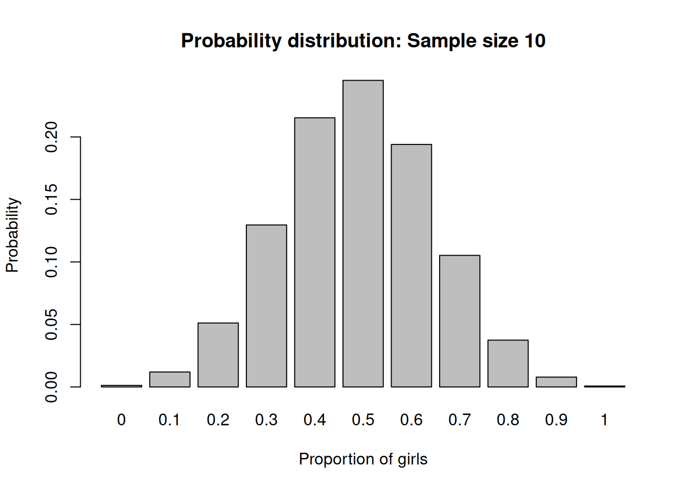
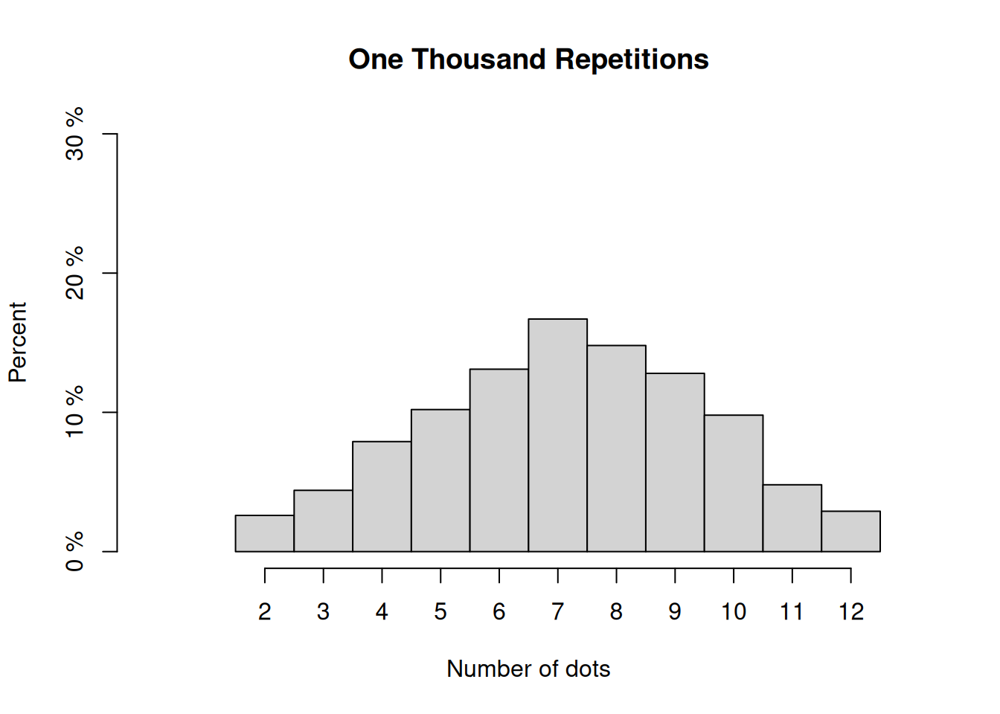
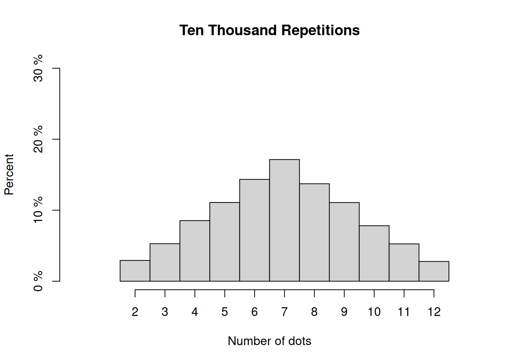
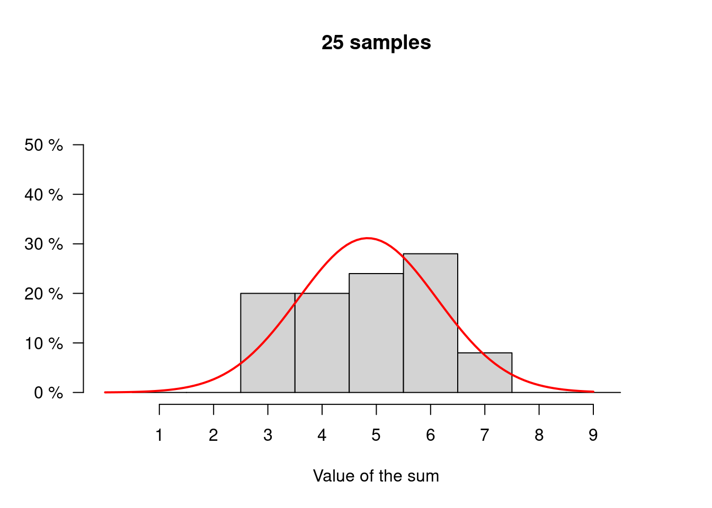

Code
barplot(c(0.513, 0.487), names.arg = c("0 (boy)", "1 (girl)"),
main = "Probability Distribution: Sample size 1",
xlab = "Proportion of girls",
ylab = "Probability")In the last unit on probability we analyzed randomizing devices such as dice and coins. We have assumed the in these cases that we can enlist all the possible outcomes that might potentially be observed and we can attach chances or probabilities to these outcomes. One example was 1/2 for a fair coin coming up Heads, or 1/6 for the die showing any of its faces after a throw, or 1/36 for two dice showing one of the possible combinations of points.
When we attach to each of these outcomes some quantity, for example 1 for Heads and 0 for Tails, probability theorists say that we have a random variable with a probability distribution. The randomizing device is such that it is ensured that the observation is generated at random from this distribution. This probability distribution can be described by parameters, such as the mean, for example in the case of the Poisson Distribution, or the mean and the standard deviation in the case of the normal distribution. We also learned how we can use R to draw data points from a probability distribution described by its parameters.
The usual situation, we face in statistics is that we have to deal with lots of data and we give an overall description of these data usually by a summary statistics like the mean, the median or other percentiles.
A fundamental step and a key idea in statistics, where probability and statistics come together, is the idea that we can view a particular statistics like the mean also as a random variable and its values as draws from its own probability distribution. This is a conceptually challenging and difficult idea but we have encountered it already once when we discussed the bootstrap.
There we took repeated samples with replacement from the distribution of human height data and computed the mean height at each step. In this way we generated a distribution of the mean height that gave us some idea about the precision of this estimate.
In contrast to bootstrapping which is a computer intensive simulation technique, probability theory provides another approach to give a mathematical answer to the same question: How confident can we be about the precision of our statistics. In this approach we can save on computing resources but we need - as in any mathematical theory - assumptions and we need to think about whether these assumptions are justified in each single situation where we apply the theory.
In unit 3 we talked about random samples, where we draw a sample from a population and want to learn from the sample statistics about the value of the statistics - say a proportion - in the underlying population.
For this we need to know how a known population gives rise to different samples. Let us think about this problem in terms of concrete example.
In a sample of 100 newborn babies we find that there are 48.7 % girls and 51.3 % boys. What can we say about the proportion of baby girls in the population of all newborns in a country?
Suppose the sample has a size of only 1. Then the proportion of baby girls must be either 0 or 1 depending whether we have selected a girl or a boy. These events occur with probability 0.513 (boy) ans 0.487 (girl).
These are actually the natural probabilities that a baby is a girl or a boy and it has been historically very stable. The outcomes are also independent across births.1 The resulting probability distribution is shown here:
1 The independence assumption is justified when we abstract for the moment from rare events such as twins and triplets. In this case things are a bit more complicated but let’s not worry about these special cases for now.
barplot(c(0.513, 0.487), names.arg = c("0 (boy)", "1 (girl)"),
main = "Probability Distribution: Sample size 1",
xlab = "Proportion of girls",
ylab = "Probability")Suppose our sample consists of two babies drawn at random from the population of newborns. Then the proportion of girls will be either 0 (both boys), 0.5 (one girl and one boy) or 1 (both girls).
Let’s work out the probabilities of these proportions: The probability of two boys must be \(0.513 \times 0.513 = 0.263\). (multiplication rule and independence) The probability of two girls must be \(0.487 \times 0.487 = 0.237\) and so the probability of one of each must be \(1 - 0.263 - 0.237 = 0.5\) (Complement rule). The resulting probability distribution is here.
barplot(c(0.236, 0.5, 0.237), names.arg = c("0 (both boys)", "0.5 (boy and girl)", "1 (both girls"),
main = "Probability Distribution: Sample size 2",
xlab = "Proportion of Girls",
ylab = "Probability")
We could now use probability theory to work out the probability distribution for even larger and larger samples. How would we do that?
Suppose we would like to find the probability that in a random sample of 5 newborns we have two boys and then three girls, like, for example, this: BBGGG. There are, of course, many other ways in which there can be two boys in a sample of five, for example GGGBB.
To solve the problem using probability theory we must first find all the possible ways two boys and three girls can occur, compute the chance of each and then use the addition rule to add up the chances. Let us skip the complicated task of finding all the possible ways and concentrate on the second task first.
The chance of a pattern BBGGG is: \(0.513 \times 0.513 \times 0.487 \times 0.487 \times 0.487 = (0.513)^2 \times (0.487)^3\). This follows from the multiplication rule as well as from the assumption of independence. Similarly the chance of GGGBB would compute as: \(0.487 \times 0.487 \times 0.487 \times 0.513 \times 0.513 = (0.487)^3 \times (0.513)^2\), so exactly the same chance.
Now, how many patterns are there? The number of patterns is given by the binomial coefficient: \[\begin{equation*} \frac{5 \times 4 \times 3 \times 2 \times 1} {(2 \times 1) \times (3 \times 2 \times 1)} = 10 \end{equation*}\] There are 10 different patterns of 2 boys and three girls, so the chance is: \(10 \times (0.513)^2 \times (0.487)^3\), or roughly 30 %.
Binomial coefficientas look messy and so mathematicians have invented a cleaner notation using an exclamation mark ! as a special symbol to indicate the result of multiplying together a number and all the numbers which come before it. For example \[\begin{eqnarray*} 1! &=& 1\\ 2! &=& 2 \times 1 = 2 \\ 3! &=& 3 \times 2 \times 1 = 6 \\ 4! &=& 4 \times 3 \times 2 \times 1 = 24 \end{eqnarray*}\] The exclamation mark reads factorial and sure enough there is an R function for it:
factorial(4)[1] 24All these arguments and reasoning can be packed into a formula giving the chance that an event will occur exactly \(k\) times out of \(n\). This is
The chance that an event \(X\) will occur exactly \(k\) times out of \(n\) is given by the binomial formula \[\begin{equation} P(X = k) = \frac{n!}{k!(n-k)!}p^k(1-p)^{n-k} \end{equation}\]
In this formula, \(n\) is the number of trials, \(k\) is the number of times the event is to occur, an \(p\) is the probability that the event will occur on any particular trial.
Mathematicians often use a particular notation for the binomial coefficient in this formula, so the formula looks like: \[\begin{equation} P(X = k) = \binom{n}{k}p^k(1-p)^{n-k} \end{equation}\] where \(\binom{n}{k}\) denotes the binomial coefficient.
The assumptions are:
R has a built in function for the binomial formula and we can use it for probability computations where it is involved. This function is called dbinom() and is to be used like this:
The chance that an event will occur exactly \(k\) times out of \(n\) is given by the binomial formula implemented in R as
dbinom(x, # X-axis values (x = 0, 1, 2, ..., n)
size, # Number of trials (n > = 0)
prob, # The probability of success on each trial
log = FALSE) # If TRUE, probabilities are given as logLet us demonstrate its use this to work out the theoretical probabilities for the proportion of girls in a sample of 5 for all possible cases (0, 1, 2, 3, 4, or 5 girls).
barplot(dbinom(seq(0,5, by = 1), 5, 0.487),
names.arg = as.character(seq(0,5, by = 1)/5),
main = "Probability distribution: Sample size 5",
xlab = "Proportion of girls",
ylab = "Probability")
Let’s check your understanding of the formula: Denote the event that a randomly chosen newborn will be a girl by \(X\). According to the binomial formula the probability that in a sample of 5 newborns we will have, say two girls, given the probability that a baby is a girl of \(0.487\) is:
\[\begin{eqnarray*} P(X = 2) &=& \binom{5}{2} \times 0.487^2 \times (1-0.487)^{(5-2)} \\ &=& \frac{5!}{2!(5-2)!} \times 0.487^2 \times (1-0.487)^{(5-2)} \\ &=& \frac{5\times 4\times 3\times 2\times 1}{(2\times 3\times 2 \times 1)} \times 0.487^2 \times (1-0.487)^{(5-2)} \\ &=& 0.3201917 \end{eqnarray*}\]
This is what we get if we do the computation by hand and using pencil and paper. When we use R we should get the same result:
dbinom(2,5,0.487)[1] 0.3201917Now look at the barplot: If we have 2 girls out of 5 the proportion of girls in the sample would be \(2/5\) or \(0.4\). The theoretical probability for this proportion would be about \(0.32\). This is exactly what you see in the barplot.
For the plot we have computed these probabilities and proportions for all constellations 0, 1, 2, 3, 4 and 5 girls. We have created this sequence with the R seq() function. For the names.arg argument we have created the same sequence but divided every element of the sequence by 5 to express the number as a proportion and then transformed the numbers to a vector of type character by the as.character() function, since names.arg requires a vector of characters.
I think by now you understand how we apply the formula both in math and in R to figure out the probabilities. Here we do the same exercise for \(n= 100\) and \(n=1000\). We do not show the code anymore her just the plots (try it!):
par(mfrow = c(1,2))
barplot(dbinom(seq(0,100, by = 1), 100, 0.487), names.arg = as.character(seq(0,100, by = 1)/100),
main = "Sample size 100",
xlab = "Proportion of girls",
ylab = "Probability")
barplot(dbinom(seq(0,1000, by = 1), 1000, 0.487), names.arg = as.character(seq(0,1000, by = 1)/1000),
main = "Sample size 1000",
xlab = "Proportion of girls",
ylab = "Probability")
When we draw random samples, like in this example drawing babies from a population of newborns at random with replacement, then the chance process of random sampling delivers a number and then another and then another and so on, in the specific example, 1 for a girl and 0 for a boy.
Mathematicians call the value around which these number vary the expected value, and the amounts of the numbers being off the in size from the expected value the standard error. The formulas for the expected value and the standard error depend on the chance process which generates the numbers.
The figures above have two notable features.
The probability distribution for the proportion tends to become regular, symmetric and bell shaped, like a normal curve. This is something we already observed when we discussed the bootstrap.
The distribution gets tighter as the sample size increases.
But before we disucss these ideas and their inplications further, let us unpack the notions of expected value and standard error a bit more.
The formula for the expected value depends on the chance process which generates the random numbers. Let us introduce the general formulas by an example.
Suppose we make hundred random draws with replacement from the box, containing the following tickets, symbolized by an R vector called box and the draws symbolized by an R vector called draws.
box <- c(0,2,3,4, 6)
draws <- sample(box, size = 100, replace = TRUE)We would like to know the expected value of the sum of these draws, when we add up the numbers on the tickets we have drawn at random from the box. How large should it approximately be?
There should be about 1/5 cases in which the ticket shows 0, 1/5 where it shows 2, 1/5 where it shows 3, 1/5 where it shows 4 and 1/5 where it shows 6. With 100 draws, this would be \(20 \times 0 + 20 \times 2 + 20 \times 3 + 20 \times 4 + 20 \times 6 = 300\).
This is called the expected value.
The formula has two ingredients:
The expected value for the sum of draws made at random with replacement from a box equals
\[\begin{equation} (\text{number of draws}) \times (\text{average of box}) \end{equation}\]
The logic here is that the average of the box amounts to \[\begin{equation} \frac{0+2+3+4+6}{5} = 15/5 = 3 \end{equation}\] On average each draw adds around 2 to the sum. With 100 draws then the sum must be around \(100 \times 3 = 300\).
See what we have in our actual random draws:
sum(draws)[1] 301pretty close.
We have seem before that the expected value of the sum of the tickets in the box is \(300\). The actual outcome of the random process was, however, 301, which is 1 off the expected value.
This is a chance error. The sum will be off the expected value by the size of a chance error, so that:
\[\begin{equation} \text{sum} = \text{expected value} + \text{chance error} \end{equation}\]
How big is this chance error likely to be?
The sum is likely to be around its expected value but to be off by a chance error similar in size to the standard error.
There is also a formula to use when we compute the standard error for a sum of draws made at random from a box with replacement. This formula plays a key role in the statistical procedures we discuss in this and in the next unit.
When drawing at random with replacement form a box of numbered tickets, the standard error for the sum of the draws is \[\begin{equation} \sqrt{\text{number of draws}} \times (\text{standard deviation of box}) \end{equation}\]
This formula has two ingredients: The square root of the number of draws and the standard deviation of the list of numbers in the box. If there is a lot of spread in the box, the standard deviation is big and it is hard to predict how the draws will turn out. So the standard error must be big too.
The sum of two draws has more variability than one draw. The sum of 100 draws is still more variable. As the number of draws grows the sum gets harder to predict, the chance error gets bigger and so does the standard error. However the standard error goes up slowly with a factor equal to the square root of the number of draws. With 100 draws, therefore the sum is 10 times more variable than with a single draw.
Note that the standard deviation and the standard error are two different concepts:
The standard deviation is for the list of numbers in the box, in our example \(0,2,3,4, 6\). This is 2
The standard error refers to the outcome of the chance process, in our case drawing at random from the box of numbers. This is for our particular example 20
A statistics, like the mean or a proportion, when viewed as a random variable has a standard error. This is to distinguish from the standard deviation of the population distribution from which this statistics derives.
We began our discussion with 100 random draws with replacement from the box
box <- c(0,2,3,4,6)The expected value of the sum is 300. The sum will be around 300 but will be off by a chance error. The average in the box is
mean(box)[1] 3and the standard deviation is
sqrt( ((0-3)^2 + (2-3)^2+ (3-3)^2 + (4-3)^2 + (6-3)^2)/5)[1] 2This measures the variability in our box. According to the square root law the sum of 100 draws is \(\sqrt{100} = 10\) times more variable. The standard error (SE) of the sum is the \(10 \times 2\) or \(20\). The likely chance error is about 20. The sum of draws should be around 200 give or take 20.
Let us use the compute again to show what this means empirically. When we asked the computer to draw 100 times with replacement from the box we got a list of successive draws, which we could visualize as follows:
res <- split(draws, ceiling(seq_along(draws)/5))
df <- as.data.frame(do.call(rbind, res))
names(df) <- c("Element 1", "Element 2", "Element 3", "Element 4", "Element 5")
rownames(df) <- NULL
knitr::kable(df[ , c("Element 1", "Element 2", "Element 3", "Element 4", "Element 5")])| Element 1 | Element 2 | Element 3 | Element 4 | Element 5 |
|---|---|---|---|---|
| 4 | 0 | 4 | 3 | 3 |
| 6 | 2 | 2 | 0 | 3 |
| 4 | 0 | 6 | 2 | 4 |
| 2 | 0 | 0 | 6 | 3 |
| 2 | 4 | 3 | 0 | 2 |
| 0 | 3 | 6 | 4 | 6 |
| 4 | 4 | 6 | 4 | 4 |
| 2 | 2 | 6 | 6 | 6 |
| 3 | 2 | 0 | 4 | 6 |
| 3 | 4 | 4 | 3 | 4 |
| 6 | 0 | 0 | 3 | 2 |
| 4 | 3 | 3 | 2 | 3 |
| 4 | 0 | 0 | 4 | 4 |
| 3 | 0 | 4 | 2 | 2 |
| 6 | 4 | 4 | 4 | 6 |
| 6 | 0 | 0 | 0 | 6 |
| 2 | 2 | 0 | 0 | 3 |
| 6 | 6 | 4 | 6 | 0 |
| 3 | 4 | 2 | 0 | 6 |
| 6 | 3 | 0 | 0 | 2 |
The sum of these draws is 301, this is 1 off the expected value.
Now if we do such an experiment 100 times, we get something like the following table. I don’t show the code but you can try to refresh your knowledge of writing a loop here.
repetitions <- vector("list", 100)
for(i in seq_along(1:100)){
repetitions[[i]] <- sum(sample(box, 100, replace = TRUE))
}
# perpeare a table
out <- split(repetitions, ceiling(seq_along(repetitions)/20))
aux <- lapply(out, unlist) |> as.data.frame()
df <- data.frame(Round = 1:20, Sum = aux[,1], Round = 21:40, Sum = aux[, 2], Round = 41:60, Sum = aux[, 3], Round = 61:80, Sum = aux[, 4], Round = 81:100, Sum = aux[,5])
knitr::kable(df, col.names = c("Round", "Sum",
"Round", "Sum",
"Round", "Sum",
"Round", "Sum",
"Round", "Sum")
)| Round | Sum | Round | Sum | Round | Sum | Round | Sum | Round | Sum |
|---|---|---|---|---|---|---|---|---|---|
| 1 | 282 | 21 | 300 | 41 | 319 | 61 | 286 | 81 | 313 |
| 2 | 289 | 22 | 293 | 42 | 337 | 62 | 305 | 82 | 342 |
| 3 | 366 | 23 | 314 | 43 | 320 | 63 | 307 | 83 | 274 |
| 4 | 280 | 24 | 292 | 44 | 301 | 64 | 297 | 84 | 302 |
| 5 | 316 | 25 | 333 | 45 | 338 | 65 | 273 | 85 | 308 |
| 6 | 322 | 26 | 301 | 46 | 302 | 66 | 314 | 86 | 316 |
| 7 | 309 | 27 | 309 | 47 | 266 | 67 | 303 | 87 | 296 |
| 8 | 290 | 28 | 292 | 48 | 295 | 68 | 288 | 88 | 280 |
| 9 | 299 | 29 | 296 | 49 | 306 | 69 | 306 | 89 | 310 |
| 10 | 316 | 30 | 295 | 50 | 326 | 70 | 310 | 90 | 275 |
| 11 | 262 | 31 | 281 | 51 | 269 | 71 | 293 | 91 | 250 |
| 12 | 314 | 32 | 329 | 52 | 313 | 72 | 287 | 92 | 318 |
| 13 | 293 | 33 | 281 | 53 | 295 | 73 | 288 | 93 | 302 |
| 14 | 340 | 34 | 312 | 54 | 305 | 74 | 292 | 94 | 321 |
| 15 | 289 | 35 | 285 | 55 | 295 | 75 | 273 | 95 | 326 |
| 16 | 310 | 36 | 297 | 56 | 303 | 76 | 292 | 96 | 282 |
| 17 | 311 | 37 | 326 | 57 | 295 | 77 | 296 | 97 | 329 |
| 18 | 315 | 38 | 279 | 58 | 332 | 78 | 296 | 98 | 305 |
| 19 | 287 | 39 | 300 | 59 | 299 | 79 | 301 | 99 | 301 |
| 20 | 292 | 40 | 292 | 60 | 338 | 80 | 310 | 100 | 314 |
The observed values in this table have a remarkably low spread around the expected value of 300. It is rare that they are more than 2 or three standard errors away from the expected value. In principle they could be as small as 0 and as large as 600 but most of them are between 2.5 standard errors, actually:
x <- mean(unlist(repetitions) <= (300 + 20*2.5) &
unlist(repetitions) >= (300 - 20*2.5))99 % are within these bounds.
When we make a large number of draws at random with replacement what is the chance that the values are within a given range ? Historically mathematicians detected the normal curve while working out problems of this kind. Let’s keep the logic of why the normal curev comes into play with a large number of draws aside for the moment and briefly discuss how it works.
Think about our box from before.
box <- c(0,2,3,4,6)When we tell the computer to repeatedly sample from this box with replacement and take the sum, he prints or stores the result over and over again. What percentage of numbers should be between 200 and 250?
Note that each sum will be somewhere between 0 and \(100 \times 6\) or 600. Let us assume we want to know the chance that the sum is somewhere between 150 and 350. Here is a picture. We convert first to standard units and then use the normal curve. 
pnorm(1.5) - pnorm(-1.5)[1] 0.8663856Let’s check with the data
y <- mean(unlist(repetitions) <= (300 + 30) &
unlist(repetitions) >= (300 - 30))This is 0.88 %. A pretty good approximation.
Why do we need a conversion to standard units? Here we could also use the normal distribution with mean 300 and standard deviation 30 to derive the same result. To see this, consider:
pnorm(330, mean = 300, sd = 20) - pnorm(270, mean = 300, sd = 20)[1] 0.8663856Same result. The probability does not depend on the units in which the variables are measured. There is an infinity of normal distributions for each different pair of means and standard deviations. For the computer this is no problem to handle, so in the computer age in some cases we do not need to convert to standard units.
However before the age of computers probabilities of the normal distribution were printed in tables, for the standard normal distributions and you had to use the table to compute probabilities for intervals of normally distributed random variables. Such a table looks like this:
 The value in the table correspond to the area under the normal curve above a certain value \(z\). So how do we read the table for our computation? The area above \(z = 1.5\) is 0.0668 (table row 16). The area above 0 is by the symmetry of the normal curve 0.5. Hence the area between 0 and 1.5 must be 0.4332 and by symmetry again, the area above -1.5 and below 0 must then by twice this amount which gives 0.8664, which is the same answer than we got from the computer.^[There are other scenarios where standardization is useful even if we have access to a computer. One is when we compare variables with different normal distributions relative to each other. One example would be, when the grades of the astronomy course and the grades of the statistics course are normally distributed but with different means and standard deviations. Then to compare the scores you need to standardize. For instance, suppose a student is scoring 60 in Astronomy with the mean score of the class being 40, and scoring 65 at statistics with the mean score of the class being 80. Given the “raw” scores, one would say that the student performed better in statistics than in astronomy. However, taking into consideration the peers, it is clear that the student performed relatively better in astronomy than in statistics.
The value in the table correspond to the area under the normal curve above a certain value \(z\). So how do we read the table for our computation? The area above \(z = 1.5\) is 0.0668 (table row 16). The area above 0 is by the symmetry of the normal curve 0.5. Hence the area between 0 and 1.5 must be 0.4332 and by symmetry again, the area above -1.5 and below 0 must then by twice this amount which gives 0.8664, which is the same answer than we got from the computer.^[There are other scenarios where standardization is useful even if we have access to a computer. One is when we compare variables with different normal distributions relative to each other. One example would be, when the grades of the astronomy course and the grades of the statistics course are normally distributed but with different means and standard deviations. Then to compare the scores you need to standardize. For instance, suppose a student is scoring 60 in Astronomy with the mean score of the class being 40, and scoring 65 at statistics with the mean score of the class being 80. Given the “raw” scores, one would say that the student performed better in statistics than in astronomy. However, taking into consideration the peers, it is clear that the student performed relatively better in astronomy than in statistics.
Furthermore z-scores also allow to compare variables that would be impossible to compare otherwise because they have different units. Say you would like to know whether somebody is more extreme in terms of salary than in terms of running speed, then there would be no way to know this except when you standardize or use z-scores. ]
Finding standard errors can be computationally intensive, especially for large samples. If the random variable can have only two values, like in the example of boys and girls, there is a short cut.
Assume we interpret a random device which shows a number 1 as indicating a girl and 0 indicating a boy, with the probability of 1 given by 0.487. Then we can use a short cut.
When a list has two different numbers the standard deviation equals: \[\begin{equation} \left(\text{bigger number} - \text{smaller number}) \right) \times \sqrt{\text{share of bigger number} \times \text{share of smaller number}} \end{equation}\]
Say, our box is like before with the baby girls and baby boys. Again, we might think of a box consisting of two values and the probability that a newborn baby will be a girl is 0.487. Then a list of 1000 babies will be a list of binomial random variables, which we can simulate
box <- c("girl", "boy")
outcome <- sample(box, 1000, replace = T, prob = c(0.487, 0.513))If we encode the event girl as 1 and the event boy as 0, then the standard deviation of the list must be according to our short cut formula:
(1-0)*sqrt(mean(outcome == "girl")*mean(outcome == "boy"))[1] 0.499991With this insight we can treat the binomial case exactly like the box case. All we have to do is to mark the tickets in the box, in our case the girls and boys, write 1 on the tickets that you count and 0 on the others and then your expected value of a sum of n tosses will be:
\[\begin{eqnarray} \text{expected value}&=& \text{number of draws} \times \text{share of} \, 1.\\ \text{standard error}&=& \sqrt{\text{number of draws}} \times \sqrt{\text{share of 1}\times \text{share of 0}} \end{eqnarray}\] This means that in our case of 100 draws the expected value of girls will be \(1000 \times 0.487 = 487\) with a standard error of \(\sqrt{1000}\times \sqrt{0.487 \times 0.513} = 15.8\) or about 16.
Look at the number from the simulation:
mean(outcome == "girl")[1] 0.497sqrt(1000)*sqrt( mean(outcome == "girl")*(mean(outcome == "boy")))[1] 15.8111This is very good. Now for computing probabilities also here we can - for large enough samples - use the normal approximation. Say, we would like to know what is the probability that we would observe a share of girls between 0.4 and 0.5?
With the computer the exact computation is easy, because all the formulas we need are implemented. We just add up all the binomial probabilities from 0 to 500 and add up from 0 to 400 and take the difference:
sum(dbinom(0:500, size = 1000, prob = 0.487)) -
sum(dbinom(0:400, size = 1000, prob = 0.487))[1] 0.8034914Using the normal approximation with mean 487 and standard error 15.8, let us convert to z scores, to get \((400 - 487)/15.8 = -5.5\) and \((500 - 487)/15.8 = 0.82\) in standard units. Thus we get
pnorm(0.82) - pnorm(-5.5)[1] 0.7938919which is a stunningly close approximation.
When we get numbers from a chance process, the expected value and the standard error give us an impression where the numbers will be. If we want to get the full picture, however, we get it from a probability histogram.
A probability histogram represents probabilities, not data.
A probability histogram represents chance by area.
Here is an example from gambling:
Craps is a casino game where you throw two dice and gamblers bet on the sum of numbers the two dice will show. We can find the chances of the combinations by probability theory (try it). But here we will simulate using concepts we already know and learend in this course. We write a function tossing two dice and sum up their outcomes and repeat this many times and plot the outome (try it)
craps <- function(){
# construct a die
die <- 1:6
# roll twice
out <- sample(die, 2, replace = T)
# sum the outcome of the rolls
sum(out)
}
crap_sim <- replicate(100, craps())
#hist(crap_sim, breaks = seq(1.5, 12.5, by = 1), freq = F, plot = F)
h100 <- hist(crap_sim, breaks = seq(1.5, 12.5, by = 1), plot = F)
h100$counts <- h100$counts/sum(h100$counts)
plot(h100,
xlab = "Number of dots",
ylab = "Percent",
main = "One Hundered Repetitions",
axes = F,
xlim = c(0,13),
ylim = c(0,0.3))
# add labels below each column
axis(1, at = 2:12, labels = 2:12)
axis(2, at =c(0,0.1, 0.2, 0.3), labels = c("0 %","10 %", "20 %", "30 %"))
Now increase the repetitions to 1000
crap_sim <- replicate(1000, craps())
#hist(crap_sim, breaks = seq(1.5, 12.5, by = 1), freq = F, plot = F)
h1000 <- hist(crap_sim, breaks = seq(1.5, 12.5, by = 1), plot = F)
h1000$counts <- h1000$counts/sum(h1000$counts)
plot(h1000,
xlab = "Number of dots",
ylab = "Percent",
main = "One Thousand Repetitions",
axes = F,
xlim = c(0,13),
ylim = c(0,0.3))
# add labels below each column
axis(1, at = 2:12, labels = 2:12)
axis(2, at =c(0,0.1, 0.2, 0.3), labels = c("0 %","10 %", "20 %", "30 %"))
And to 10000
crap_sim <- replicate(10000, craps())
#hist(crap_sim, breaks = seq(1.5, 12.5, by = 1), freq = F, plot = F)
h10000 <- hist(crap_sim, breaks = seq(1.5, 12.5, by = 1), plot = F)
h10000$counts <- h10000$counts/sum(h10000$counts)
plot(h10000,
xlab = "Number of dots",
ylab = "Percent",
main = "Ten Thousand Repetitions",
axes = F,
xlim = c(0,13),
ylim = c(0,0.3))
# add labels below each column
axis(1, at = 2:12, labels = 2:12)
axis(2, at =c(0,0.1, 0.2, 0.3), labels = c("0 %","10 %", "20 %", "30 %"))
You can see that the probability histograms observed from the random experiments of throwing the two dice 100, 1000 and 10000 times get closer and closer to the ideal probability histogram, where the relative frequency of events from the random experiment come arbitrarily close to the theoretical probabilities.
There are 6 events in 36 where the sum of the die could be 7 (try to convince yourself!). This is 16 2/3 %. The area of the rectangle over 7 in the probability histogram, therefore equals 16.3%. The total area of all the rectangles sum up to 100 %.
When we discussed the theoretical share of baby girls using the binomial distribution, we saw a remarkable fact:
par(mfrow = c(1,2))
barplot(dbinom(seq(0,100, by = 1), 100, 0.487), names.arg = as.character(seq(0,100, by = 1)/100),
main = "Sample size 100",
xlab = "Proportion of girls",
ylab = "Probability")
barplot(dbinom(seq(0,1000, by = 1), 1000, 0.487), names.arg = as.character(seq(0,1000, by = 1)/1000),
main = "Sample size 1000",
xlab = "Proportion of girls",
ylab = "Probability")We saw in this example that the variability of the observed proportion gets smaller as the sample size increases. Here the same mechanisms are at work as in the example of craps.
These mechanisms have been first systematically described by is the classic Jacob Bernoulli in the 17th century and the result is termed the law of large numbers or the law of averages.2
2 Jacob Bernoulli, 6 January 1655 – 16 August 1705,was one of the many prominent mathematicians in the Swiss Bernoulli family. He sided with Gottfried Wilhelm Leibniz during the Leibniz–Newton calculus controversy and was an early proponent of Leibnizian calculus, which he made numerous contributions to; along with his brother Johann, he was one of the founders of the calculus of variations. He also discovered the fundamental mathematical constant e. However, his most important contribution was in the field of probability, where he derived the first version of the law of large numbers in his work Ars Conjectandi.[3]
The manifestation of this law here is that when we increase the sample, the proportion of girls in the outcome of the random experiment comes closer and closer to the true proportion of 0.487.
In the previous section we discussed the normal approximation when the sample size is large enough. This is also the content of the famous central limit theorem detected in 1733 by Abraham de Moivre. This theorem says:
When drawing at random with replacement from a box, the probability histogram for the sum will follow the normal curve, even is the contents of the box is not normally distributed, provided the number of draws is large enough.
This is a remarkable fact. Whatever the the shape of the population distribution from which each of the original measurements were sampled, for large sample sizes their average can be considered as drawn from a normal curve. This will have a mean that is equal to the standard deviation that has a simple relationship to the standard deviation of the original population and is known, as we discussed before, as the standard error.
Now we see also why in the bootstrap examples we discussed in unit 5, the distribution of the statistics we got from repeated resamples looked more and more like a normal distribution. This is the consequence of the central limit theorem.
This applies also for proportions, because as we discussed in the previous section, by appropriate labeling of the outcomes we want to count proportions can be understood as means of a binary variable with values 0 and 1.
Before we close this section, let us discuss the scope of the normal approximation to get a better feeling when it is appropriate to use it.
Let us for the start consider an unbalanced box like this one with 9 zeros and one 1:
skew_box <- c(0,0,0,0,0,0,0,0,1)This is the probability histogram of this box:
barplot(c(0.9, 0.1), names.arg = c("0", "1"),
main = "Probability histogram of lopsided box",
xlab = "Proportion of 0",
ylab = "Probability")How many draws do we need before the sum gets near to normal? Let us start with 25 draws from the skew box first. (I don’t show the code. You by now know how to code this. Try it!):
appr_1 <- function(){
sample(skew_box, 9 , replace = TRUE, prob = c(rep(0.1,8), 0.9)) |> sum()
}
out_1 <- replicate(25, appr_1())
h25 <- hist(out_1, breaks = seq(0.5, 9.5, by = 1), plot = F)
h25$counts <- h25$counts/sum(h25$counts)
plot(h25,
xlab = "Value of the sum",
ylab = " ",
main = "25 samples",
axes = F,
xlim = c(0,10),
ylim = c(0,0.6)
)
# add labels below each column
axis(1, at = 1:9, labels = 1:9)
axis(2, at =c(0,0.1, 0.2, 0.3, 0.4, 0.5), labels = c("0 %","10 %", "20 %", "30 %", "40 %", "50 %"), las = 1)
data <- out_1
x_values <- seq(0, 9, length = 100)
y_values <- dnorm(x_values, mean = mean(data), sd = sd(data))
y_values <- y_values * diff(h25$mids[1:2])
#overlay normal curve on histogram
lines(x_values, y_values, lwd = 2, col = "red")
You can see that there are is a bad fit between the probability histogram and the normal curve. The approximation will not work.
Let us try 1000 draws
out_2 <- replicate(1000, appr_1())
h1000 <- hist(out_1, breaks = seq(0.5, 9.5, by = 1), plot = F)
h1000$counts <- h1000$counts/sum(h1000$counts)
plot(h1000,
xlab = "Value of the sum",
ylab = " ",
main = "500 samples",
axes = F,
xlim = c(0,10),
ylim = c(0,0.6)
)
# add labels below each column
axis(1, at = 1:9, labels = 1:9)
axis(2, at =c(0,0.1, 0.2, 0.3, 0.4, 0.5), labels = c("0 %","10 %", "20 %", "30 %", "40 %", "50 %"), las = 1)
data <- out_2
x_values <- seq(0, 9, length = 100)
y_values <- dnorm(x_values, mean = mean(data), sd = sd(data))
y_values <- y_values * diff(h1000$mids[1:2])
#overlay normal curve on histogram
lines(x_values, y_values, lwd = 2, col = "red")While the central limit theorem is a remarkable and extraordinary law of nature, the question arises, how this law can help us work out the accuracy of estimates without using the heavy machinery of computer simulation.
Probability theory ha s shown how the distributions of statistics like means and proportions look like when the data are drawn from known populations.
But the usual situation in practice is the other way round: Most of the time in a practical data analysis situation we have to go from a single sample back to saying something about a possible underlying population. This is the process of inductive inference, we discussed in unit 3.
So far in this unit we have studies chance processes using probability theory. We ran simulations, like flipping coins or drawing tickets from a box or sampling girls and boys from a population of newborns using emprical probabilities. We have to distinguish two form of uncertainty. One type of uncertainty is related to the stituation when I run a simulation before I press the ENTER key on my computer. This relates to the chance of an unpredictable event. This is called aleatory uncertainty.
When I have run the simulation and before I look at the outcome, there is another situation of uncertainty. The outcome is fixed, because I have already run the simulation but I do not yet know the outcome yet. This form of uncertainty is called epistemic uncenrtainty.
Statistics is used to deal with situations of epistemic uncertainty about some quantity in the world, like the mean human hight or the proportion of baby girls among the newborns in a country.
For example, wehn we conduct a surevy we do not know the true proportions of - for example stunted and wasted children - as in the DHS example we discussed in unit 2. These fixed but unknown quamtities are called parameters in statistics. Just as in the example we gave before, before we do the survey we have aleatory uncertainty because of the random sampling. After we have drawn the sample and have the data, we use a probability model to deal with and understand our epistemic uncertainty. Probability theory which tells us what to expect is used to tell us what we can learn from what we have observed. This is the basis for statistical inference and this is the way in which statistics and probability work together to understand data.
One of the most important concepts from statistical inference the confidence interval is built on this idea. Let me explain the steps how we derive an uncertainty interval around an estimate, without resorting to a bootstrap simulation.
There are three stages, which we describe here following Spiegelhalter (2019):
Probability theory tell us for any particular population parameter, an interval in which we expect the observed statistics to lie with 95 % probability.
Then we observe the particular statistics, say a mean or a proportion.
Finally we work out the range of possible population parameters, for which our statistics lies in their 95 % prediction intervals. This range we call a confidence interval.
The label of this interval is 95% confidence interval, because with repeated application 95 % of these intervals contain the true value. Note that this is different from saying that there is a 95 % probability that this particular interval contains the true value, an incorrect interpretation which you might encounter often even in the academic literature.
The theory of computing confidence intervals was consolidated and introduced in the 1930ies by Jerzy Neyman and Egon Pearson, wo was the son of Karl Person, whose data on the heights of fathers and sons we had begin studying in unit 4.
In our leading example we found that the sample percentage of girls in our simulated sample of 1000 was 487 or 48.7 %. How far can the population percentage be from 48.7% ? The standard error is estimated as 15.8, suggesting that the chance error is around 1.58 %. So the population percentage could be off by around 1.6 %
Let us now show how the probability histogram for the number of baby girls gets close to the normal curves when the sample gets large, as in our example of 1000 draws.
# x-axis grid
set.seed(45)
x <- rbinom(1000, 1000, 0.487)
x2 <- seq(0,1000, by = 1)
# normal curve
fun <- dnorm(x2, mean = mean(x), sd = sd(x))
# Histogram
h <- hist(x, breaks = 100,
plot = F)
# par(mar = c(5, 4, 4, 8) + 0.3)
#
plot(h, col = "white",
freq = FALSE,
xlab = " ",
ylab = "Percent per girl",
ylim = c(0, max(fun)),
main = "Histogram of number of girls",
xaxt = "n",
yaxt = "n"
)
# overlay normal curve
par(new = TRUE)
lines(x2, fun, col = 2, lwd = 2)
axis(side = 4, at = c(0,0.005,0.01, 0.015, 0.02, 0.025),
labels = c(labels = c("0 %", "8 %", "16 %", "24 %", "32 %", "40 %")),
ylab = "Percent per standard unit")
# adding axis
axis(1, at = c(440, 460, 480, 500, 520, 540),
labels = c("440 cm", "460 cm", "480 cm", "500 cm", "520 cm", "540 cm"))
axis(1, at = c(440, 460, 480, 500, 520, 540),
labels = as.character(round(c(-2.9746835, -1.7088608, -0.4430380, 0.8227848, 2.0886076, 3.3544304), 2)), line = 2.5)
axis(2, at = c(0,0.005,0.01, 0.015, 0.02, 0.025),
labels = c(labels = c("0 %", "0.5 %", "1 %", "1.5%", "2 %", "2.5 %")),
ylab = "Percent per girl")
abline(v = 487, col = 4)There are two vertical axes in the figure. The probability histogram is drawn relative to the left axis showing percent per baby-girl. The normal curve is drawn relative to the right axis showing percent per standard unit. To see how the scales match up: 2 % per baby girl matches up - for example-
with 32 % per standard unit because the Standard error is about 16 (15.8) so there are about 16 baby-girls to the standard unit and 32/16 = 2. The same reasoning applies to the other numbers.
The normal curve can now used to approximate probabilities. Assume we would like to know the probability that we observe between 482 and 492 girls in a sample of 1000. The expected number of girls is 487 and the standard error is 15.8. The chance of getting exactly 482 girls is the area of the rectangle between 475 and 480 on the number of girls scale and has a height of 0.103. The area is thus 0.52.
In standard units the base of the rectangle goes from -0.76 to - 0.44.
Since the histogram and the normal curve almost coincide, so the area of the rectangle between 482 and 483 is approximately equal to the area under the normal curve between -0.32 and - 0.25.
The area of the rectangle is 0.021. When we approximate by the normal curve we get:
pnorm(-0.25) - pnorm(0.32)[1] -0.2242222This approximation is excellent.
With this approximation method justified by the central limit theorem we can ask how far the population share of new born baby girls can deviate from 48.7 %- The standard error was estimated at 1.58 %, so the population proportion could easily be between 47.12 and 50.28.
Since these are chance errors there is the possibility that errors of larger size, for example errors of 2 standard errors occur, if infrequently. What happens, when we take the cutoff at that? Take for example the interval of two standar errors above and below the expected value:
 This is a confidence interval for the population percentage, with a confidence level of about 95%. This means that you can be about 95% confident that the population proportion of baby girls is inside the+interval (47.12, 50.28) percent.
This is a confidence interval for the population percentage, with a confidence level of about 95%. This means that you can be about 95% confident that the population proportion of baby girls is inside the+interval (47.12, 50.28) percent.
What, if you want different confidence levels? Anything except 100 % is allowed by going the appropriate number of standard errors right and left from the expected value. For example:
The interval “sample percentage” plus/minus 1 stndard error is an 68 % confidence interval for the population percentage.
The interval “sample percentage” of plus/minus 2 standard errors is a 95 % confidence interval fro the population percentage.
The interval “sample percentage” of plus minus 3 standard errors is a 99.7 confidnece interval for the population percentage.
You can go on but even 10 standard deviations may not give you 100 % confidence, because for any interval you take, the normal curve always has some area (if very very small) outside of it.
This will be conceptually the most difficult part of the course. The main ideas that should be conveyed in this unit are
The students should gain a firm understanding of confidence intervals and how they help us in quantifying uncertainty of predictions we make based on our available data. They should see and understand how and why it is sometimes more convenient and parsimonious to have formulae for confidence intervals rather than quantifying the uncertainty from simulation. The intuitive understanding of the limit theorems and when they can be legitimately applied will be important here.